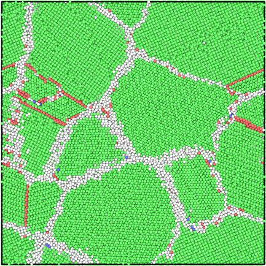
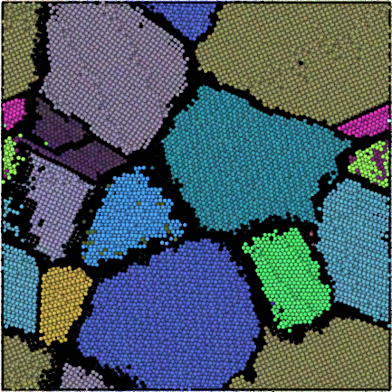
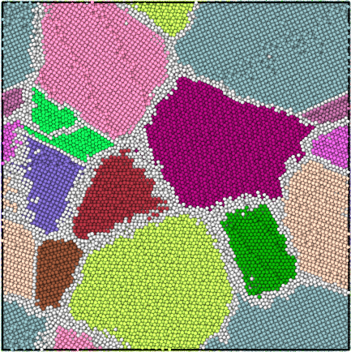
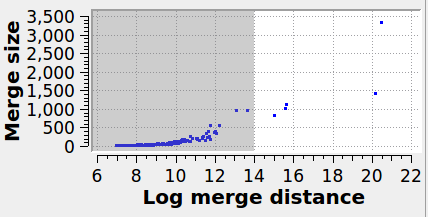
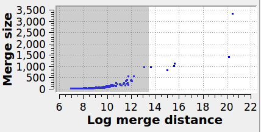
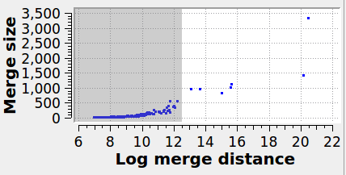
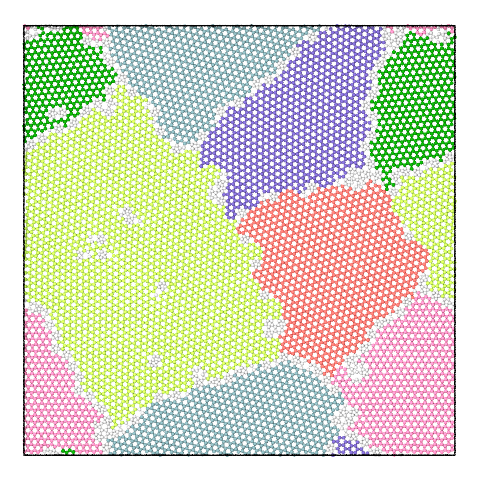
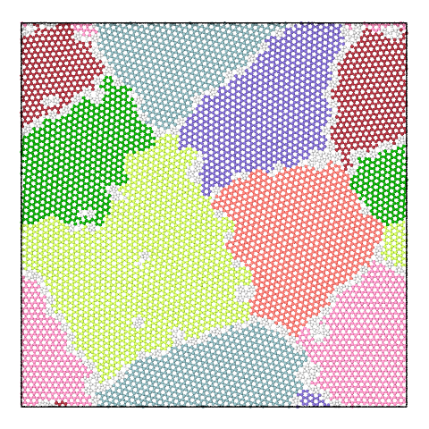
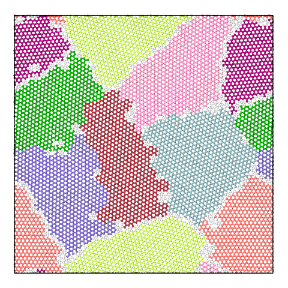

| Table of Contents | Grain segmentation | Up |
|---|---|---|
| Prev | Modifiers | Next |
| Table of Contents | Grain segmentation | Up |
|---|---|---|
| Prev | Modifiers | Next |
This modifier identifies the individual grains in a polycrystalline microstructure by grouping atoms in crystal regions having similar local lattice orientations. The algorithm works in three steps:
The modifier assigns a new property named Grain to particles
to indicate which grain each atom belongs to (encoded as an integer grain identifier). The special grain identifier 0 means an atom does not
belong to any grain.
The modifier furthermore computes a mean lattice orientation for each identified grain and outputs a list of
all grains as a data table.
This modifier and the underlying algorithm are still considered experimental. Please use this early preview version with caution and help us improve the algorithm by reporting any issues you may observe when applying it to your simulations. This documentation page is only preliminary and will be further expanded in a future version of OVITO.
The grain segmentation algorithm is illustrated in the figures below. The local structural environment is determined for every atom using PTM (left). PTM also determines the local orientations (coloured, middle) but does not explicitly group atoms into grains. Hierarchical clustering is used to identify grains (right).
| Structure | Lattice orientation | Segmented grains |
|---|---|---|
|  |  |  |
The modifier creates grains by performing hierarchical clustering on the nearest-neighbor atom graph. Two types of hierarchical clustering algorithms are implemented:
Graph edge weights are initialized as exp(-d2/3), where d is the misorientation
in degrees between two neighboring atoms. Grains are built up by contracting edges using the Node Pair Sampling method
of Bonald et al.
This algorithm produces good segmentations in a range of microstructure types. It performs well on low-angle grain boundaries and can discriminate between grains and sub-grains. A drawback is that the merge distance threshold parameter does not have an intuitive physical meaning.
The automatic mode alleviates this problem by choosing a good merge threshold automatically for you using a statistical analysis of the sequence of graph merging steps, stopping the merging of crystallite clusters as soon as a deviation from the regular exponential behavior is observed.
In this algorithm the graph gets replaced by its minimum spanning tree. The edge weights are the misorientation angles between neighboring atoms. Grains are built up by contracting edges in sorted order (by misorientation, low to high). The distance of a contraction (or merge) is simply the edge misorientation.
This is a fast algorithm which has lower memory usage. The merge distance has a simple interpretation (misorientation between neighboring atoms or crystal clusters) and is scale invariant. Drawbacks are that it can produce poor results in microstructures containing low-angle grain boundaries, and it performs poorly in the presense of local perturbations due to, e.g., thermal atomic displacements or elastic lattice distortions. This method is best suited for low-temperature simulations.
This approach is similar to that of Panzarino and Rupert. The key differences are the use of PTM (more robust structural determination), a faster algorithm (minutes instead of days), and the formulation as a hierarchical clustering problem (effects of cutoff choices are visible).
Specifies the maximum graph edge contraction distance and determines the resulting number and sizes of grains. A lower threshold produces more (and smaller) grains; a larger threshold produces fewer (and larger) grains. The scatter plot ("Log merge distance" vs "Merge size") can be used to select an appropriate merge threshold value. If the grains are well-separated, the scatter plot will contain a dense cluster at low distances, and a few isolated points at higher distances. An ideal threshold lies after the dense cluster, but before the isolated points (see screenshot). Note that this threshold parameter can be set to a negative value, because it is specified on a logarithmic distance scale.
Grains below this size are dissolved. The atoms contained within are set as 'orphan' atoms (see option Adopt orphan atoms).
After clustering has been performed by the algorithm, some atoms might not be assigned to a grain, so-called 'orphan' atoms (due to Hoffrogge and Barrales-Mora). This includes atoms that are part of grain boundaries. This option lets the modifier assign these orphan atoms to the nearest grain.
This option lets the algorithm merge atoms having hexagonal crystal structures (e.g. HCP) with atoms having cubic structures (e.g. FCC) at stacking faults or other types of coherent crystal interfaces. Thus, stacking faults will become part of the surrounding grain if this option is enabled. Furthermore, atoms belonging to the cores of coherent twin boundaries will be attributed to one of the two adjacent grains.
This option assigns each grain a unique color for easier visualization of the grain structure.
Whether to visualize the edges of the initial neighbor graph as bonds between atoms.
Local lattice disorientations are output as a bond property named Disorientation,
which may be visualized using the Color coding modifier of OVITO.
This output option is mainly meant for debugging purposes and has large memory requirements.
It is not recommended for large datasets.
The panel below illustrates the effect of varying the merge threshold in a polycrystalline graphene sample, using the Graph Clustering algorithm. A good segmentation into 6 grains is achieved using a merge threshold of 14 (left). Reducing the threshold to 13.5 reveals a subgrain structure in the largest grain (middle). A further reduction of the threshold to 12.5 splits the largest grain into three subgrains (right).
Note that the difference between subgrains and grains is not well defined. It is therefore up to the user to decide upon the best threshold value.
| 6 grains | 7 grains | 8 grains |
|---|---|---|
|  |  |  |
|  |  |  |